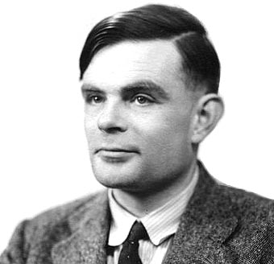
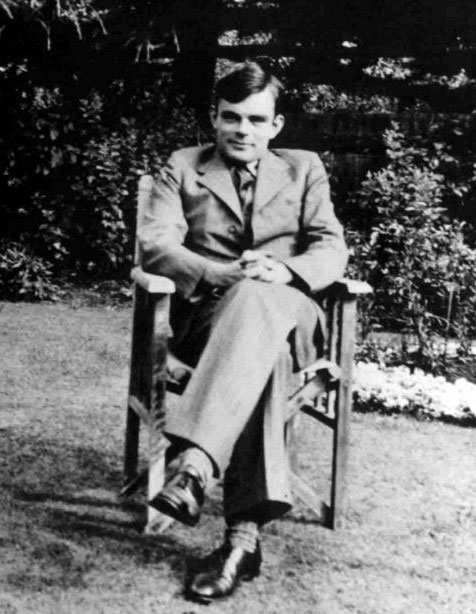
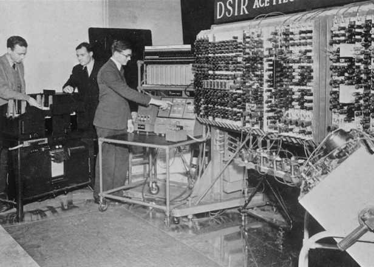
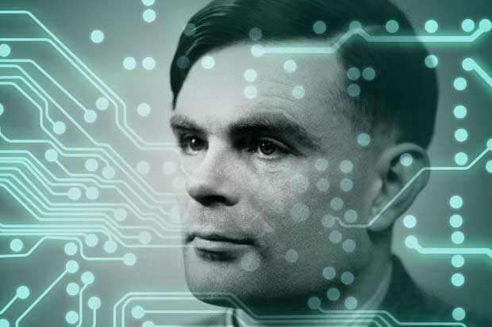

Alan Mathison Turing, matemáico, lógico y cientifico de la computación
|  |  |
 |
Indice
1. Introduccion
2. Estudios
3. Sus estudios universitarios sobre computabilidad
4. Solución al problema de decisión
5. La máquina de Turing
6. Maquinas oracle
7. Estudios sobre las primeras computadoras y el test de Turing
1. Introduccion
Alan Mathison Turing, OBE (Paddington, Londres, 23 de junio de 1912-Wilmslow, Cheshire, 7 de junio de 1954), fue un matemático, lógico, científico de la computación, criptógrafo, filósofo, maratoniano y corredor de ultra distancia británico.
Es considerado uno de los padres de la ciencia de la computación y precursor de la informática moderna. Proporcionó una influyente formalización de los conceptos de algoritmo y computación: la máquina de Turing. Formuló su propia versión que hoy es ampliamente aceptada como la tesis de Church-Turing (1936). Durante la segunda guerra mundial, trabajó en descifrar los códigos nazis, particularmente los de la máquina Enigma, y durante un tiempo fue el director de la sección Naval Enigma de Bletchley Park. Se ha estimado que su trabajo acortó la duración de esa guerra entre dos y cuatro años. Tras la guerra, diseñó uno de los primeros computadores electrónicos programables digitales en el Laboratorio Nacional de Física del Reino Unido y poco tiempo después construyó otra de las primeras máquinas en la Universidad de Mánchester.
En el campo de la inteligencia artificial, es conocido sobre todo por la concepción del test de Turing (1950), un criterio según el cual puede juzgarse la inteligencia de una máquina si sus respuestas en la prueba son indistinguibles de las de un ser humano.
La carrera de Turing terminó súbitamente tras ser procesado por homosexualidad en 1952. Dos años después de su condena, murió —según la versión oficial por suicidio; sin embargo, su muerte ha dado lugar a otras hipótesis, incluida la del asesinato—. El 24 de diciembre de 2013, la reina Isabel II promulgó el edicto por el que se exoneró oficialmente al matemático, quedando anulados todos los cargos en su contra.
2. Estudios
En 1926, con catorce años, ingresó en el internado de Sherborne en Dorset. Su primer día de clase coincidió con una huelga general en Inglaterra, pero su determinación por asistir a clase era tan grande que recorrió en solitario, con su bicicleta, los más de 96 kilómetros que separaban Southampton de su escuela, pasando la noche en una posada. Tal hazaña fue recogida en la prensa local.Las esperanzas y las ambiciones de Turing en la escuela fueron moldeadas por la estrecha amistad que desarrolló con un compañero un poco mayor, Christopher Morcom, quien fue el primer amor de Turing. Morcom murió repentinamente, el 13 de febrero de 1930, solo unas pocas semanas después de su última temporada en Sherborne, debido a complicaciones de la tuberculosis bovina, contraída tras beber leche de alguna vaca infectada. La fe religiosa de Turing se hizo pedazos, y se volvió ateo.
Adoptó la convicción de que todos los fenómenos, incluyendo el funcionamiento del cerebro humano, deben ser materialistas. Sin embargo siguió creyendo en la supervivencia del espíritu después de la muerte. La inclinación natural de Turing hacia la matemática y la ciencia no le atrajo el respeto de sus profesores de Sherborne, cuyo concepto de educación hacía mayor énfasis en los clásicos. En la escuela de Sherbone, ganó la mayor parte de los premios matemáticos que se otorgaban y, además, realizaba experimentos químicos por su cuenta aunque la opinión del profesorado respecto a la independencia y ambición de Turing no era demasiado favorable.
A pesar de ello, Turing continuó mostrando una singular habilidad para los estudios que realmente le gustaban, y llegó a resolver problemas muy avanzados para su edad (15 años) sin ni siquiera haber estudiado cálculo elemental.
3. Sus estudios universitarios sobre computabilidad
Debido a su falta de voluntad para esforzarse con la misma intensidad en el estudio de los clásicos que en el de la ciencia y la matemática, Turing suspendió sus exámenes finales varias veces y tuvo que ingresar en la escuela universitaria que eligió en segundo lugar, King's College, Universidad de Cambridge, en vez de en la que era su primera elección, Trinity. Tras su graduación, se trasladó a la Universidad estadounidense de Princeton, donde trabajó con el lógico A. Church. Recibió las enseñanzas de Godfrey Harold Hardy, un respetado matemático que ocupó la cátedra Sadleirian en Cambridge, y que posteriormente, fue responsable de un centro de estudios e investigaciones matemáticas entre 1931 y 1934. En 1935 Turing fue nombrado profesor del King's College.4. Solución al problema de decisión
El Entscheidungsproblem, que se traduce como «problema de decisión», fue un reto en lógica simbólica para encontrar un algoritmo general que decidiera si una fórmula de cálculo de primer orden es un teorema. En 1936, de manera independiente, Alonzo Church y Alan Turing demostraron ambos que es imposible escribir tal algoritmo. Como consecuencia, es también imposible decidir con un algoritmo general si ciertas frases concretas de la aritmética son ciertas o falsas.5. La maquina de Turing
En su memorable estudio "Los números computables, con una aplicación al Entscheidungsproblem" (publicado en 1936), Turing reformuló los resultados obtenidos por Kurt Gödel en 1931 sobre los límites de la demostrabilidad y la computación, sustituyendo al lenguaje formal universal descrito por Gödel por lo que hoy se conoce como máquina de Turing, unos dispositivos formales y simples. Turing demostró que dicha máquina era capaz de resolver cualquier problema matemático que pudiera representarse mediante un algoritmo. Las máquinas de Turing siguen siendo el objeto central de estudio en la teoría de la computación. Llegó a probar que no había ninguna solución para el problema de decisión, Entscheidungsproblem, demostrando primero que el problema de la parada para las máquinas de Turing es irresoluble: no es posible decidir algorítmicamente si una máquina de Turing dada llegará a pararse o no. Aunque su demostración se publicó después de la demostración equivalente de Alonzo Church respecto a su cálculo lambda, el estudio de Turing es mucho más accesible e intuitivo. También fue pionero con su concepto de «máquina universal (de Turing)», con la tesis de que dicha máquina podría realizar las mismas tareas que cualquier otro tipo de máquina. Su estudio también introduce el concepto de números definibles.6. Maquinas Oracle
La mayor parte de 1937 y 1938 la pasó en la Universidad de Princeton, estudiando bajo la dirección de Alonzo Church. Entre 1938 y 1939 volvió a Inglaterra y estudió filosofía de las matemáticas. En 1938 obtuvo el Doctorado en Princeton; en su discurso introdujo el concepto de hipercomputación, en el que ampliaba las máquinas de Turing con las llamadas máquinas oracle, las cuales permitían el estudio de los problemas para los que no existe una solución algorítmica. Tras su regreso a Cambridge en 1939, asistió a las conferencias de Ludwig Wittgenstein sobre las bases de las matemáticas. Ambos discutieron y mantuvieron un vehemente desencuentro, ya que Turing defendía el formalismo matemático y Wittgenstein criticaba que la matemática estaba sobrevalorada y no descubría ninguna verdad absoluta.7. Estudios sobre las primeras computadoras y el test de Turing
De 1945 a 1948 Turing vivió en Richmond, Londres, donde trabajó en el Laboratorio Nacional de Física (NPL) en el diseño del ACE (Automatic Computer Engine o Motor de Computación Automática).En 1946 presentó un estudio que se convertiría en el primer diseño detallado de un computador automático. El primer borrador del informe sobre el EDVAC de Von Neumann fue anterior al de Turing, pero mucho menos detallado. Aunque diseñar el ACE era factible, el secretismo que reinaba durante la guerra desembocó en retrasos para iniciar el proyecto por lo que Turing se sintió desilusionado.
En 1947 se tomó un año sabático en Cambridge, tiempo durante el cual escribió un trabajo pionero sobre la inteligencia artificial que no fue publicado en vida. Mientras se encontraba en Cambridge y a pesar de su ausencia, se siguió construyendo el prototipo piloto del ACE, que ejecutó su primer programa en mayo de 1950. Aunque la versión completa del ACE de Turing jamás fue construida, el diseño de otras computadoras en todo el mundo le debió mucho a su concepción.
A mediados de 1948 fue nombrado director delegado del laboratorio de computación de la Universidad de Mánchester y trabajó en el software de una de las primeras computadoras reales, la Manchester Mark I. Durante esta etapa también realizó estudios más abstractos y en su artículo de octubre de 1950 «Computing machinery and intelligence» Turing trató el problema de la inteligencia artificial y propuso un experimento que hoy se conoce como test de Turing, con la intención de definir una prueba estándar por la que una máquina podría catalogarse como «sensible» o «sintiente».
En el documento, Turing sugirió que en lugar de construir un programa para simular la mente adulta, sería mejor producir uno más simple para simular la mente de un niño y luego someterlo a educación. Una forma invertida de la prueba de Turing se usa ampliamente en Internet, el test CAPTCHA que está diseñado para determinar si un usuario es un humano y no una computadora
|  |  |  |